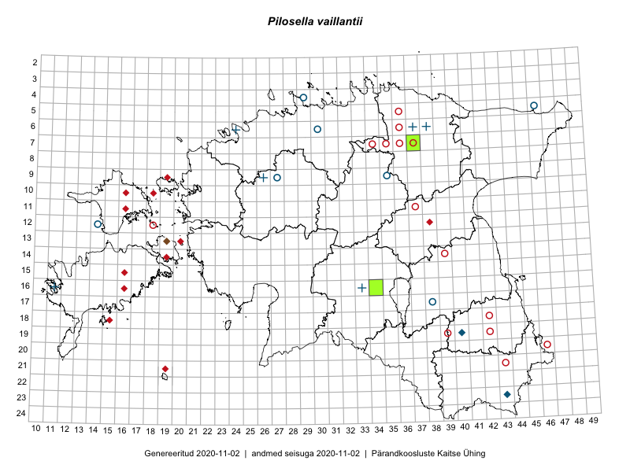

Pilosella vaillantii — pehmekarvane karutubakas
Asteraceae :: Pilosella vaillantii (Tausch) Soják (67); Hieracium cymigerum (Rchb.) Nägeli & Peter (6)

Kaart põhineb 75 kirjel:
herbaareksemplare 73
PKÜ kirjeid1 2
Taime kaasaegsed ja ajaloolised leiukohad asuvad 41 ruudus.
Tingmärgid ja ruutude arvud periooditi (U2 / V3 )
█ 2006–2020 (7/–)
◆/◇ 1971–2005 (10/14)
○ 1921–1970 (21/16)
+ kuni 1920 (6/0)
× hävinud (–/0)
? kaheldav (–/0)
| Ruut | Leidja(d) | Leiuaeg | Kirje |
|---|---|---|---|
| 16-12 | Haide-Ene Rebassoo | 1959-07-10 | TU265676: Pilosella vaillantii (Tausch) Soják |
| 16-12 | Haide-Ene Rebassoo | 1959-07-08 | TU265677: Pilosella vaillantii (Tausch) Soják |
| 16-12 | Haide-Ene Rebassoo | 1959-06-12 | TU265678: Pilosella vaillantii (Tausch) Soják |
| 09-19 | Triin Reitalu | 1996-07-14 | TAA0002943: Pilosella vaillantii (Tausch) Soják |
| 07-37 | Silvia Talts | 1937-06-20 | TAA0002945: Pilosella vaillantii (Tausch) Soják |
| 18-42 | Linda Viljasoo | 1960-06-13 | TAA0002946: Pilosella vaillantii (Tausch) Soják |
| 18-42 | Linda Viljasoo | 1960-06-13 | TAA0002947: Pilosella vaillantii (Tausch) Soják |
| 11-37 | Agnes Ojaveer | 1966-06-14 | TAA0002948: Pilosella vaillantii (Tausch) Soják |
| 14-39 | Linda Viljasoo | 1967-06-08 | TAA0002949: Pilosella vaillantii (Tausch) Soják |
| 12-18 | Heljo Karu, Liivia Laasimer, Haide-Ene Rebassoo | 1956-06-23 | TAA0002951: Pilosella vaillantii (Tausch) Soják |
| 12-18 | Heljo Karu, Liivia Laasimer, Haide-Ene Rebassoo | 1956-06-23 | TAA0002952: Pilosella vaillantii (Tausch) Soják |
| 04-29 | H. Lippmaa | 1933-06-25 | TAA0002953: Pilosella vaillantii (Tausch) Soják |
| 04-29 | H. Lippmaa | 1933-06-25 | TAA0002954: Pilosella vaillantii (Tausch) Soják |
| 20-46 | Linda Viljasoo, A. Dessler | 1957-06-28 | TAA0002955: Pilosella vaillantii (Tausch) Soják |
| 21-43 | Linda Viljasoo, Ellen Muru | 1957-06-19 | TAA0002956: Pilosella vaillantii (Tausch) Soják |
| 04-29 | H. Lippmaa, Ellen Muru | 1933-06-25 | TAA0002957: Pilosella vaillantii (Tausch) Soják |
| 04-29 | H. Lippmaa | 1933-06-25 | TAA0002958: Pilosella vaillantii (Tausch) Soják |
| 17-38 | Linda Viljasoo | 1962-07-04 | TAA0002959: Pilosella vaillantii (Tausch) Soják |
| 11-37 | Linda Viljasoo | 1945-06-01 | TAA0002962: Pilosella vaillantii (Tausch) Soják |
| 20-46 | Linda Viljasoo, A. Dessler | 1957-06-28 | TAA0002963: Pilosella vaillantii (Tausch) Soják |
| 14-19 | Toomas Kukk | 1999-06-17 | TAA0002964: Pilosella vaillantii (Tausch) Soják |
| 12-38 | Heljo Krall | 1985-06-16 | TAA0002965: Pilosella vaillantii (Tausch) Soják |
| 19-39 | Agnes Ojaveer, Helga Tamm, Ella Tammemägi | 1960-06-22 | TAA0002966: Pilosella vaillantii (Tausch) Soják |
| 13-20 | Toomas Kukk | 1999-06-16 | TAA0002967: Pilosella vaillantii (Tausch) Soják |
| 17-38 | Toomas Kukk | 1990-07-13 | TAA0002969: Pilosella vaillantii (Tausch) Soják |
| 23-43 | Heljo Krall | 1986-06-12 | TAA0002970: Pilosella vaillantii (Tausch) Soják |
| 10-18 | Maret Kask | 1982-06-12 | TAA0002971: Pilosella vaillantii (Tausch) Soják |
| 18-42 | Helga Tamm | 1960-06-10 | TAA0002972: Pilosella vaillantii (Tausch) Soják |
| 17-38 | Linda Viljasoo | 1962-06-22 | TAA0002973: Pilosella vaillantii (Tausch) Soják |
| 19-42 | Silvia Talts, Helga Tamm | 1960-06-15 | TAA0002974: Pilosella vaillantii (Tausch) Soják |
| 14-16 | Anneli Tamm | 1999-07-13 | TAA0002975: Pilosella vaillantii (Tausch) Soják |
| 07-35 | Albert Üksip | 1948-06-14 | TAA0002976: Pilosella vaillantii (Tausch) Soják |
| 06-30 | T. Lippmaa | 1933-07-02 | TU267834: Pilosella vaillantii (Tausch) Soják |
| 06-36 | Albert Üksip | 1935-06-28 | TU267836: Pilosella vaillantii (Tausch) Soják |
| 07-35 | Albert Üksip | 1935-07-14 | TU267837: Pilosella vaillantii (Tausch) Soják |
| 06-30 | Albert Üksip | 1934-06-14 | TU267838: Pilosella vaillantii (Tausch) Soják |
| 17-38 | Albert Üksip | 1936-06-18 | TU267839: Pilosella vaillantii (Tausch) Soják |
| 06-36 | Albert Üksip | 1935-06-28 | TU267840: Pilosella vaillantii (Tausch) Soják |
| 07-34 | Albert Üksip | 1935-06-25 | TU267841: Pilosella vaillantii (Tausch) Soják |
| 19-40 | L. Pihlapuu | 1976-07-12 | TU267845: Pilosella vaillantii (Tausch) Soják |
| 19-40 | L. Pihlapuu | 1976-07-12 | TU267846: Pilosella vaillantii (Tausch) Soják |
| 19-40 | L. Pihlapuu | 1976-07-12 | TU267847: Pilosella vaillantii (Tausch) Soják |
| 19-40 | L. Pihlapuu | 1976-07-12 | TU267848: Pilosella vaillantii (Tausch) Soják |
| 04-29 | T. Lippmaa | 1933-06-25 | TU267850: Pilosella vaillantii (Tausch) Soják |
| 18-37 | K. Eichwald | 1934-06-21 | TU267986: Pilosella vaillantii (Tausch) Soják |
| 09-27 | H. Hendrikson | 1934-07-04 | TAM0000802: Pilosella vaillantii (Tausch) Soják |
| 09-35 | H. Aasamaa | 1937-06-18 | TAM0000803: Pilosella vaillantii (Tausch) Soják |
| 12-14 | H. Aasamaa | 1969-08-06 | TAM0000804: Pilosella vaillantii (Tausch) Soják |
| 09-27 | H. Aasamaa | 1934-09-11 | TAM0000805: Pilosella vaillantii (Tausch) Soják |
| 09-27 | H. Hendrikson | 1934-09-11 | TAM0000806: Pilosella vaillantii (Tausch) Soják |
| 09-27 | H. Aasamaa | 1934-09-11 | TAM0000807: Pilosella vaillantii (Tausch) Soják |
| 09-27 | H. Aasamaa | 1934-09-11 | TAM0000808: Pilosella vaillantii (Tausch) Soják |
| 09-27 | H. Aasamaa | 1934-09-11 | TAM0000809: Pilosella vaillantii (Tausch) Soják |
| 04-29 | H. Lippmaa | 1933-06-25 | TAM0005219: Pilosella vaillantii (Tausch) Soják |
| 05-46 | Hugo Salasoo | 1932-07-12 | TAM0005220: Pilosella vaillantii (Tausch) Soják |
| 17-38 | Hugo Salasoo | 1933-06-18 | TAM0005224: Pilosella vaillantii (Tausch) Soják |
| 06-37 | R. Lehbert | 1903-06-11 | TAM0072549: Pilosella vaillantii (Tausch) Soják |
| 14-21 | Toomas Kukk | 2008-07-09 | TAA0078344: Pilosella vaillantii (Tausch) Soják |
| 14-21 | Toomas Kukk | 2009-06-28 | TAA0076996: Pilosella vaillantii (Tausch) Soják |
| 14-21 | Toomas Kukk | 2009-06-28 | TAA0076997: Pilosella vaillantii (Tausch) Soják |
| 16-11 | Fr. Schmidt | TAM0115707: Hieracium cymigerum (Rchb.) Nägeli & Peter | |
| 09-26 | G. Pahnsch | 1878-07-04 | TAM0115711: Hieracium cymigerum (Rchb.) Nägeli & Peter |
| 09-26 | G. Pahnsch | 1878-07-03 | TAM0115712: Hieracium cymigerum (Rchb.) Nägeli & Peter |
| 16-33 | G. Pahnsch | 1879-06-13 | TAM0115721: Hieracium cymigerum (Rchb.) Nägeli & Peter |
| 06-24 | G. Pahnsch | 1879-06-30 | TAM0115729: Hieracium cymigerum (Rchb.) Nägeli & Peter |
| 07-28 | Thea Kull, Meeli Mesipuu | 2016-06-02 | TAA0133459: Pilosella vaillantii (Tausch) Soják |
| 18-32 | Maria Abakumova | 2015-05-23 | TAA0119892: Pilosella vaillantii (Tausch) Soják |
| 23-43 | Meeli Mesipuu | 2003-06-08 | TAA0144906: Pilosella vaillantii (Tausch) Soják |
| 11-37 | Toomas Kukk | 2018-06-30 | TAA0146686: Pilosella vaillantii (Tausch) Soják |
| 07-37 | Ott Luuk, Peedu Saar | 2019-06-12 | TAA0150354: Pilosella vaillantii (Tausch) Soják |
| 05-33 | Ott Luuk, Peedu Saar | 2019-06-11 | TAA0150357: Pilosella vaillantii (Tausch) Soják |
| 06-38 | G. Pahnsch | 1869-06-29 | TAM0115732: Hieracium cymigerum (Rchb.) Nägeli & Peter |
| 16-34 | Toomas Kukk, Ott Luuk | 2019-06-16 | TAA0152606: Pilosella vaillantii (Tausch) Soják |
| 23-43 | 2003-06-08 | PKÜ: 11474 | |
| 13-19 | 2000-04-23 | PKÜ: 6673 |
Pärandkoosluste Kaitse Ühingu (PKÜ) andmebaas sisaldab inventeeritud koosluste kirjeldusi ja liigiloendeid. Kõige enam on andmeid niidutaimede kohta.↩︎
Ruutude arv uue atlase andmekogu järgi. Muuhulgas arvestab vanemat herbaariumi, 2005. aasta atlase välitöölehtedelt uuesti digitaliseeritud andmeid jne. Uue atlase andmekogust pärinevad andmed on kaardile kantud siniste sümbolitega.↩︎
Ruutude arv 2005. aasta atlase (Kukk, T., Kull, T., Eesti taimede levikuatlas. Eesti Maaülikool, Põllumajandus- ja Keskkonnainstituut, Tartu, 2005) järgi. Andmeallikana on kasutatud levik.exe programmi, kus igas ruudus on registreeritud vaid uusim leid. Seetõttu on vanemate perioodide kohta andmed puudulikud. Kasutatud levik.exe andmestikus leidub mõningaid kõrvalekaldeid atlase trükis ilmunud versioonist, sagedamini tarnade ja käpaliste seas. Lisaks leidub selles andmestikus valik liike (peamiselt väheste leidudega tulnuktaimed), mille kaarte trükis ei avaldatud. Vana atlase andmed ruutudest, milles ei ole uue atlase andmekogus leide enne 2006. aastat, on kaardil esitatud punaste sümbolitega. Vana atlase andmetel hävinud ja kaheldavaid leiukohti pole hilisemate (taas)leidude põhjal korrigeeritud.↩︎